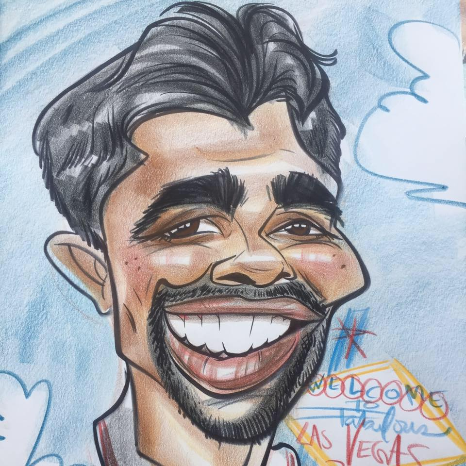

KITHNUWAN SILVA

System Designer
📞 077 7046 928 | 📧 kithnuwan@gmail.com
📍 No. 96/128, Padukka Road, Horana, Western 12400
PROFESSIONAL SUMMARY
Enthusiastic and results-driven AV and Broadcast Systems professional with nearly two decades of experience in Extra Low Voltage (ELV), Unified Communication, and IT technologies. Proven expertise in project management, system integration, and client engagement, with a focus on delivering innovative, scalable, and efficient solutions. Strong leadership skills and a deep understanding of AV over IP, video conferencing, broadcast automation, and media asset management systems.
CORE COMPETENCIES
- AV over IP, Broadcast, and Unified Communication Systems
- Leadership & Team Motivation
- Project Planning & Implementation/li>
- AV over IP
- Video Conferencing
- Broadcast Automation
- Technical Training & Support
- Vendor Coordination & Client Management
- MAM, Uplink, and Multicast Solutions
PROFESSIONAL EXPERIENCE
Senior Manager – Broadcast & IT,Swedish Trading Audio Visual Pvt Ltd, Colombo, Sri Lanka
Jul 209 – 2021
- Lead the design and implementation of AV over IP and broadcast systems for various projects.
- Collaborate with clients to understand their requirements and provide tailored solutions.
- Manage project timelines, budgets, and resources to ensure successful project delivery.
- Conduct training sessions for clients on system operation and maintenance.
Senior Manager – Broadcast & IT,Swedish Trading Audio Visual Pvt Ltd, Colombo, Sri Lanka
Jun 2003 – Jul 2009
- Assisted in the design and implementation of AV and broadcast systems.
- Provided technical support and training to clients on system usage.
- Coordinated with vendors to ensure timely delivery of equipment and services.
EDUCATION
BSc in Computer Networks & Security
Glyndŵr University, Wrexham, UK
PROFESSIONAL CERTIFICATIONS
- Cisco Certified Network Associate (CCNA – Routing & Switching)
- Dante Certification – Level 1 & 2
- Biamp Tesira Certification
- Barco ClickShare Certified Technical Expert
KEY PROJECT HIGHLIGHTS
Broadcast Projects
- Parliament of Sri Lanka – Designed and commissioned full HD multilingual broadcast system (Project Value: LKR 237M).
- MBC Stein Studio – HD Upgrade with Grass Valley & Sony Broadcast equipment (US$ 295K)
- ITN OB Bus – Supply and installation of HD systems including Grass Valley Karrera, EVS Replay (Value: US$ 300K+)
- Department of Ayurveda – Setup and training for full broadcast studio (LKR 20M)
Contact Me
About Me